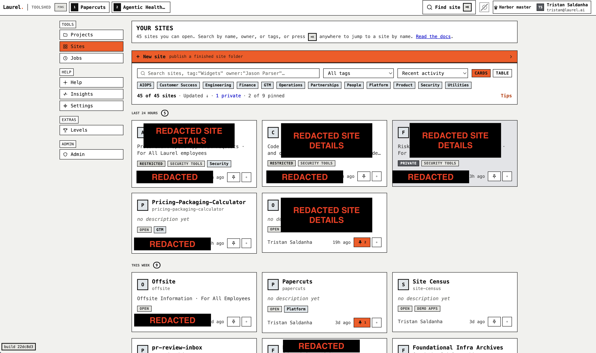
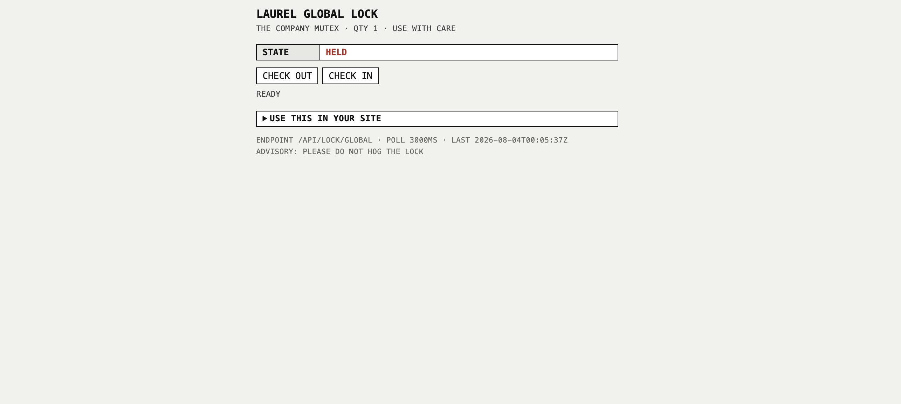
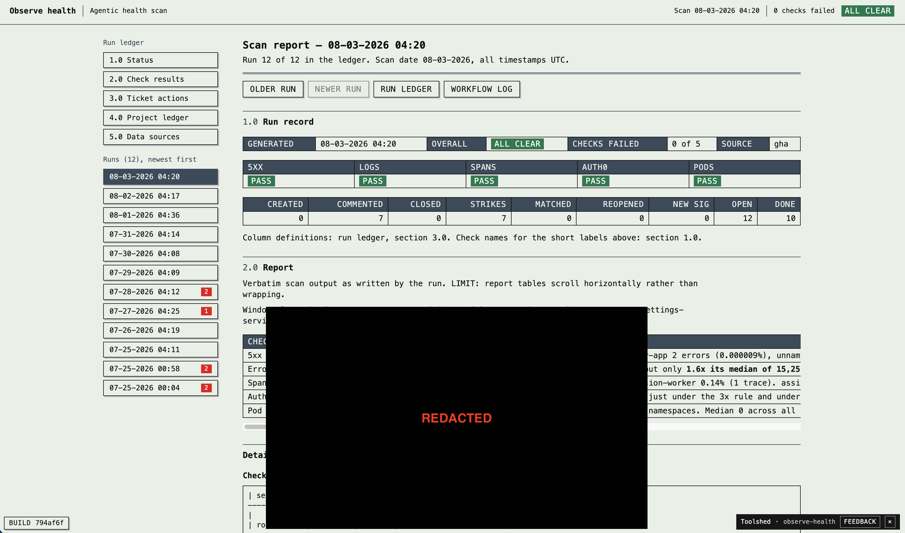

When I started at (or, returned to) this company last summer, there were some weeks when I felt that we'd truly tried everything worth trying in the AI coding market. There's a lot more happening now than there was a year ago - I still believe that we're at the leading edge, but our suite of tools has exploded. Let's talk about a couple of them.
TOOLSHED
It shouldn't suprise anyone that random apps (shitapps, as I lovingly call them) are popping up all over the place. Everyone I talk to has a couple localhost's up at any given time with some custom dashboard.
Everyone can make an app on localhost, but how do they share that with their team? Most people making these apps not only don't know how to do "deployment", they might not even be that familiar with how their filesystem works or what a web application really is. (there's been a lot of this XKCD going around our infra team.) Enter Laurel's Toolshed.

The toolshed allows for these things:
-
Instant deployment: no fiddling with github, or vercel, or god forbid DNS; drag-and-drop your files into the webapp and they're deployed instantly at
toolshedURL.com/s/your-site. -
An opinionated library for common needs: Many apps want to do some of the same things - answer a question based off of a document, upload and download files, schedule a job, or send a slack message. That's all doable now with things like toolshed.parse(), toolshed.store(), and toolshed.task(). No longer does every app have some weird new implementation of the same primitives. This gives us a lot of confidence that sites on the toolshed are actually doing what they claim to be doing, instead of silently failing in some way the author of the site is unable to notice.
-
Security: Pre-toolshed, without getting into too much detail, some people were finding ways to share their tools in improper ways. No longer! You need a @laurel.ai email to reach the toolshed. Inside the app, RBAC means you can control who sees what sites or data within a site. We even have a connection to our org chart, so you can scope permissions to someone and their direct reports, or "the security team".
-
Agent interactivity: Obviously, these are sites people are building with their agents, so let's make it easy for them to do that. Help is reachable in the app, in a docs page, over an API, in a company distributed skillfile, and in blocks of text meant to be copied and pasted to an agent with the expectation they're not going to be read. Docs for people are kept ultra-simple, and the real docs are easy for your agent to get to.
People have made all sorts of things in the toolshed - brand asset pages, dashboards, calculators, small utilities, newsletters, vendor-replacement tools. My favorite is the company mutex, a single lock that's shared across the whole site. looks like someone's holding it at the moment.

Papercuts
This is an idea I stole from someone on twitter, deployed to a company wide level. Any time our coding agents hit a snag - syntax error, missing dependency, dead link, whatever - that gets logged in a database. These issues then get grouped, sorted, patched, and pushed with almost no human interaction. If your agent runs a bad command today, it'll know not to do that tomorrow. This system was built as a POC of the toolshed capabilities, but has earned its permanence as a seriously helpful tool. The result is hundreds of tickets of nit fixes across our many internal tools. No more stale quickstart guides, for example.
Agent Health Scans V2
This is a project that has been working well since ~9 months ago, but is due for an upgrade. We noticed a step change in this project's performance when we slotted in Fable 5 and the Opus 5 from Opus 4.8, so we've been upgrading it lately. Basically, we give an agent the ability to query our obsevability data, give it some other context, and tell it to look around and find problems. This analysis runs for anywhere from 20-60 minutes and often finds good stuff. Misconfigurations which aren't causing errors, problems below any serious threshhold, staleness, whatever. Like the papercuts, these findings get clustered and adressed, solving problems long before any person has to take a look.
We also made it generate some nice looking reports, browsable in our fine toolshed.

What We've Learned
Backlog Half-life
There's a pattern emerging in these sorts of agent-based projects: they have an implicit TTL. In planning projects for my team, I'm now adding a "V2" 6-12 months after the fact, and a V3 after that. This is usually the case for infrastructure projects, where you design for your scale today, and replace something when you reach the next level of scale. Usually this is user traffic, but here it's model generations.
Drive By PRs
We've had this scenario play out a few times: someone on team A drops a PR in team B's channel saying "Hey, I ran your service through claude and now it's 90% more efficient. Can we merge this in?" While it pissed a lot of people off the first couple times it happened, the results are undeniable, and there's no getting around the reactions being ego driven. Everyone loves vibe coding someone else's job, but it should never ever happen to me!
The learning here is that it's not just the unimportant crap on the edges of our stack that's getting vibe coded against, it's now the real stuff. It turns out that if you tell Opus 5 to "make this better", it often can. We've had to do lots of work to support this world - better testing and rollout infrastructure to accomodate serious code being pushed that's no longer written from an expert's guidance of an agent, but the very smart agent of someone who can't verify the output even if they wanted to.
What's Next
We're hiring! We have capacity to bring on 2 engineers to our productivity engineering team. Once hired, the three of us will turn our attention towards back our engineers and build systems to help release code faster and smoother. If you're reading this you know how to reach me.